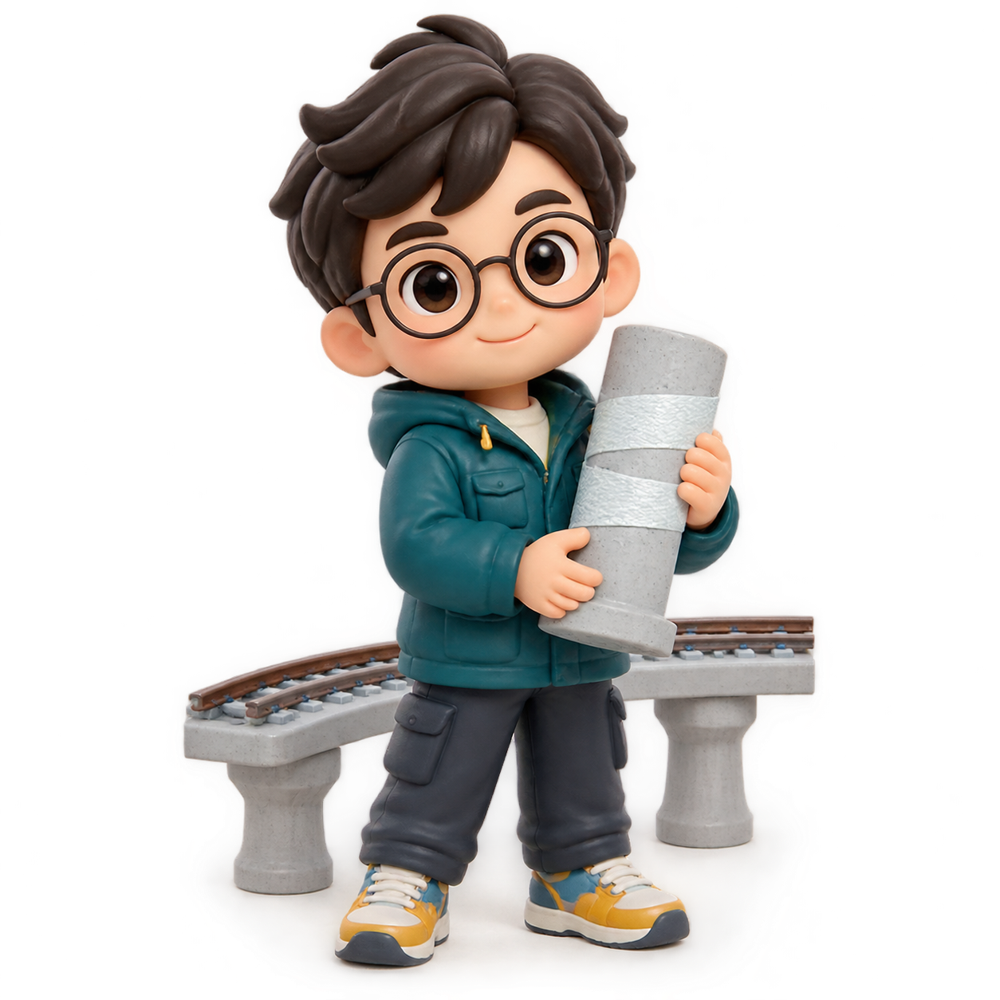

Bridge repair桥梁修复
Component tests + OpenSeesPy构件试验 + OpenSeesPy
The bridge doctor.让震损桥梁重新站起来。
A civil engineering researcher studying CFRP repair and seismic recovery in high-speed railway bridges.研究高铁桥梁震后 CFRP 修复与性能恢复的土木工程研究者。

MECHLABEngineer / ResearcherEDITION 01
I am a master's student in the School of Civil Engineering at Central South University, advised by Liqiang Jiang and Fengqi Guo.我是中南大学土木工程学院硕士研究生，师从江力强老师和郭风琪老师。
I study how CFRP repair restores earthquake-damaged railway bridge piers. Through experiments, nonlinear analysis, and interpretable machine learning, I connect component repair with bridge–track system recovery.我研究 CFRP 修复如何恢复震损铁路桥墩的抗震性能，并通过试验、非线性分析和可解释机器学习，将构件修复与桥轨系统性能恢复联系起来。
Component tests + OpenSeesPy构件试验 + OpenSeesPy
Interpretable ML + optimisation可解释机器学习 + 优化
Bridge–track interaction桥轨相互作用
Journal of Bridge Engineering · 31(9)
Computer Modeling in Engineering & Sciences · 148(2)
Engineering Structures · 365
School of Civil Engineering · Master's Student土木工程学院 · 硕士研究生
School of Highway · Undergraduate公路学院 · 本科生